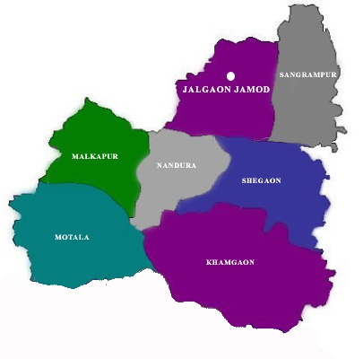

Operational Area
The Krishi Vigyan Kendra (KVK) at Jalgaon Jamod, established in 1994 under the ICAR and hosted by Satpuda Education Society, serves as a crucial extension center for agricultural development in Buldhana district, Maharashtra.
Blocks Under Operational Area
- Jalgaon Jamod
- Sangrampur
- Shegaon
- Khamgaon
- Nandura
- Malkapur
- Motala
Agro-Ecological Situations (AES)
AES I
Covers 70% of Jalgaon Jamod and 95% of Sangrampur blocks. Black cotton soil, high rainfall, hilly terrain. Major crops: cotton, wheat, gram.
AES II
Includes Malkapur, Nandura, Shegaon. Features plain saline soil (Kharpanpata). Crops: cotton, gram, sunflower.
AES III
Covers Motala and parts of Buldana & Chikhali. Hilly terrain, shallow soils. Crops: cotton, jowar, maize, wheat, gram. Horticulture: custard apple, aonla, chili, tomato.
Operational Area Map
